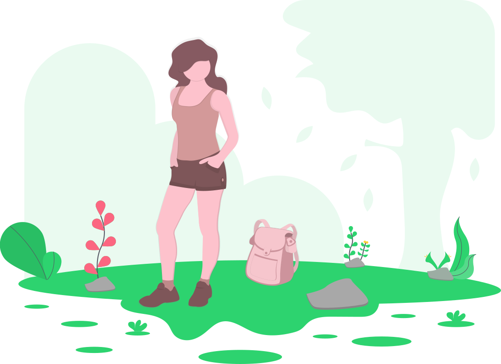

<style>
  .header-container{
    padding: 16px 32px 16px 32px;
  }
  .header-container ion-text{
    font-size: 11px;
    color: #9d9fa6;
  }
  .view-container h4{
    margin: 0;
    padding: 16px 32px 16px 32px;
  }
</style>
<ion-content>
  <div class="header-container">
    <ion-searchbar class="ion-no-padding" placeholder="Search culture destination" (search)="searchByKeyword($event)"></ion-searchbar>
    <div *ngIf="!regions && isLoading" class="ion-text-center">
      <ion-spinner name="dots"></ion-spinner>
    </div>
    <ion-list *ngIf="regions" class="search-result">
      <div *ngIf="regions.length === 0">
        <ion-item>
          No results found
        </ion-item>
      </div>
      <div *ngIf="regions.length !== 0">
        <ion-item *ngFor="let region of regions" (click)="selectRegion(region.key)">
          {{ucwords(region.name)}}
        </ion-item>
      </div>
    </ion-list>
  </div>
  <div *ngIf="selectedRegion">
    <div class="header-container">
      <h4 class="ion-no-margin">Explore</h4>
      <ion-text>{{ucwords(selectedRegion.name)}}</ion-text>
    </div>
    <div class="maps-container">
      
    </div>
    <div class="view-container">
      <h4>Favorite Culture Destination</h4>
      <div *ngIf="!spots" style="width: 100%; height: 100%;">
        <ion-spinner name="dots" class="centered"></ion-spinner>
      </div>
      <div *ngIf="spots">
        <ion-row>
          <ion-col size="6" *ngFor="let spot of spots" routerLink="view/{{spot.key}}">
            <ion-card class="ion-no-padding ion-no-margin card" style="border-radius: 15px;">
              <ion-img class="center-cropped" src="{{spot.imageurl}}" alt=""></ion-img>
              <ion-card-content style="width: 100%;">
                <h6 class="ion-no-margin one-line"><b>{{spot.name}}</b></h6>
                <ion-text style="font-size: 10px;">{{ucwords(selectedRegion.name)}}</ion-text>
              </ion-card-content>
            </ion-card>
          </ion-col>
        </ion-row>
      </div>
    </div>
  </div>
</ion-content>
<ion-footer>
  <div *ngIf="!selectedRegion" class="ion-padding-end">
    
  </div>
</ion-footer>
